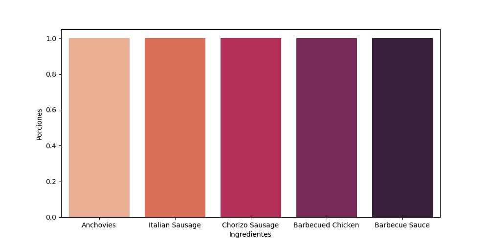

A continuación se mostrará una aproximación de las compras semanales de Pizzerías Maven.
| Ingredientes | Porciones |
| Genoa Salami | 1 |
| Capocollo | 10 |
| Pepperoni | 12 |
| Tomatoes | 60 |
| Asiago Cheese | 7 |
| Garlic | 66 |
| Chicken | 17 |
| Pineapple | 10 |
| Red Peppers | 32 |
| Thai Sweet Chilli Sauce | 5 |
| Spinach | 24 |
| Mushrooms | 23 |
| Red Onions | 45 |
| Feta Cheese | 16 |
| Kalamata Olives | 13 |
| Beef Chuck Roast | 7 |
| Green Peppers | 9 |
| Zucchini | 8 |
| Bacon | 2 |
| Italian Sausage | 1 |
| Chorizo Sausage | 1 |
| Ricotta Cheese | 5 |
| Gorgonzola Piccante Cheese | 5 |
| Mozzarella Cheese | 26 |
| Parmigiano Reggiano Cheese | 5 |
| Calabrese Salami | 3 |
| Green Olives | 8 |
| Barbecued Chicken | 1 |
| Barbecue Sauce | 1 |
| Artichoke | 1 |
| Jalapeno Peppers | 11 |
| Fontina Cheese | 6 |
| Gouda Cheese | 1 |
| Goat Cheese | 6 |
| Oregano | 1 |
| Cilantro | 10 |
| Corn | 10 |
| Chipotle Sauce | 10 |
| Prosciutto di San Daniele | 3 |
| Arugula | 3 |
| Coarse Sicilian Salami | 1 |
| Luganega Sausage | 1 |
| Onions | 1 |
| Sliced Ham | 5 |
| ‘Nduja Salami | 5 |
| Pancetta | 5 |
| Friggitello Peppers | 5 |
| Anchovies | 1 |
| Artichokes | 17 |
| Sun-dried Tomatoes | 6 |
| Pesto Sauce | 9 |
| Alfredo Sauce | 3 |
| Brie Carre Cheese | 1 |
| Prosciutto | 1 |
| Caramelized Onions | 1 |
| Pears | 1 |
| Thyme | 1 |
| Provolone Cheese | 5 |
| Smoked Gouda Cheese | 5 |
| Romano Cheese | 5 |
| Blue Cheese | 5 |
| Eggplant | 3 |
| Plum Tomatoes | 3 |
| Peperoncini verdi | 5 |
